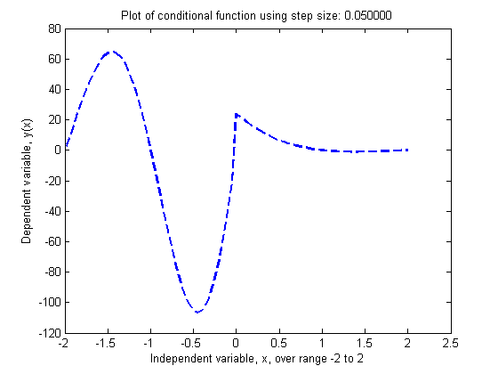

clear; clc; clf;
disp ' Mid-Term Project ';
disp ' Cameron Carroll ';
disp ' ================================ ';
htext = [' This program calculates and plots the following conditional' ...
char(10) ' function over the range of -2 to 2, given an input step size.' char(10)];
disp(htext);
disp ' y(x) = x^4 - 10x^3 + 35x^2 - 50x + 24 when x > 0';
disp ' y(x) = 0 when x = 0';
disp ' 100sin(pi*x)*e^((x+0.6)/2) when x < 0';
disp '';
itext = [char(10) ' Enter the step size for x that satisfies as such:' char(10) ...
' 0.01 <= step <= (Invalid input will default to 0.05) ---->: '];
step = 0.6;
disp(char(10));
if (step > 0.1) || (step < 0.01)
disp ' Invalid step size; Defaulting to 0.05...';
disp(char(10));
step = 0.05;
end
range = -2:step:2;
index_range = 1:length(range);
x(1) = -2;
y(1) = 1.2163e-014;
for ii = 2:length(range)
x(ii) = x(ii-1) + step;
if x(ii) < 0
y(ii) = 100 * sin(pi*x(ii)) * exp(1)^((x(ii)+0.6)/2);
elseif x(ii) > 0
y(ii) = x(ii)^4 - 10*x(ii)^3 + 35*x(ii)^2 - 50*x(ii) + 24;
else
y(ii) = 0;
end
end
disp '';
disp ' Index x y(x) ';
disp ' ------------------------------------';
results = [index_range' x' y'];
fprintf(' %2.0f %3.4f %3.4f \n', results');
plot(x, y, '--b', 'LineWidth', 2);
titleText = sprintf('Plot of conditional function using step size: %f', step);
title(titleText);
xlabel('Independent variable, x, over range -2 to 2');
ylabel('Dependent variable, y(x)');
Mid-Term Project
Cameron Carroll
================================
This program calculates and plots the following conditional
function over the range of -2 to 2, given an input step size.
y(x) = x^4 - 10x^3 + 35x^2 - 50x + 24 when x > 0
y(x) = 0 when x = 0
100sin(pi*x)*e^((x+0.6)/2) when x < 0
Invalid step size; Defaulting to 0.05...
Index x y(x)
------------------------------------
1 -2.0000 0.0000
2 -1.9500 7.9650
3 -1.9000 16.1321
4 -1.8500 24.3004
5 -1.8000 32.2583
6 -1.7500 39.7892
7 -1.7000 46.6762
8 -1.6500 52.7080
9 -1.6000 57.6845
10 -1.5500 61.4229
11 -1.5000 63.7628
12 -1.4500 64.5721
13 -1.4000 63.7512
14 -1.3500 61.2379
15 -1.3000 57.0105
16 -1.2500 51.0904
17 -1.2000 43.5442
18 -1.1500 34.4839
19 -1.1000 24.0663
20 -1.0500 12.4915
21 -1.0000 -0.0000
22 -0.9500 -13.1320
23 -0.9000 -26.5973
24 -0.8500 -40.0645
25 -0.8000 -53.1850
26 -0.7500 -65.6014
27 -0.7000 -76.9561
28 -0.6500 -86.9007
29 -0.6000 -95.1057
30 -0.5500 -101.2692
31 -0.5000 -105.1271
32 -0.4500 -106.4614
33 -0.4000 -105.1080
34 -0.3500 -100.9643
35 -0.3000 -93.9944
36 -0.2500 -84.2338
37 -0.2000 -71.7923
38 -0.1500 -56.8543
39 -0.1000 -39.6786
40 -0.0500 -20.5951
41 0.0000 24.0000
42 0.0500 21.5863
43 0.1000 19.3401
44 0.1500 17.2543
45 0.2000 15.3216
46 0.2500 13.5352
47 0.3000 11.8881
48 0.3500 10.3738
49 0.4000 8.9856
50 0.4500 7.7173
51 0.5000 6.5625
52 0.5500 5.5153
53 0.6000 4.5696
54 0.6500 3.7198
55 0.7000 2.9601
56 0.7500 2.2852
57 0.8000 1.6896
58 0.8500 1.1683
59 0.9000 0.7161
60 0.9500 0.3283
61 1.0000 -0.0000
62 1.0500 -0.2732
63 1.1000 -0.4959
64 1.1500 -0.6722
65 1.2000 -0.8064
66 1.2500 -0.9023
67 1.3000 -0.9639
68 1.3500 -0.9947
69 1.4000 -0.9984
70 1.4500 -0.9782
71 1.5000 -0.9375
72 1.5500 -0.8792
73 1.6000 -0.8064
74 1.6500 -0.7217
75 1.7000 -0.6279
76 1.7500 -0.5273
77 1.8000 -0.4224
78 1.8500 -0.3152
79 1.9000 -0.2079
80 1.9500 -0.1022
81 2.0000 0.0000
